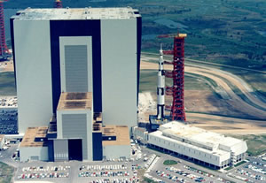
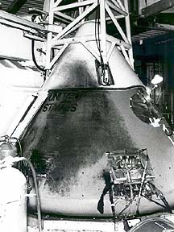
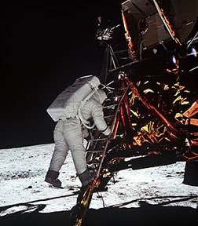

The Apollo Program 1963 - 1973
On May 25, 1961 President John F. Kennedy proposed that the United States establish as a national goal a human lunar landing and return by the end of the decade. In response to this presidential initiative, NASA instituted the Apollo Project (which was preceded by the Mercury Project and the Gemini Project). A giant new rocket, the Saturn V, would be needed to send astronauts and their equipment safely to the lunar surface.
January 27, 1967 - Apollo 1
On January 27, 1967 tragedy struck the U.S. space program when a fire erupted inside an Apollo spacecraft during ground testing at Complex 34, Cape Canaveral Air Force Station (AFS), Florida. This flash fire caused the deaths of Astronauts Virgil (Gus) Grissom, Edward White II, and Roger Chafee. As a result of this accident, major modifications had to be made to the Apollo spacecraft prior to its first crewed mission in space.
It is thought that an electrical spark started the fire which spread quickly in the oxygen-filled atmosphere of the capsule, killing the crew within seconds. Navy Lieutenant Commander Chaffee, aged 31, had never flown in space before. Air Force Lieutenant Colonel Grissom, 39, was the first American to make two flights. Air Force Lieutenant Colonel White, 35, made America's first space walk.
The Apollo 1 tragedy led to a big investigation into the cause of the crash and criticism was leveled at NASA for its complacency in underestimating the likelihood of fire.
A number of modifications were made to the Apollo spacecraft: the hatch was redesigned and made easier to open from the inside, the interior of the capsule was made more fireproof, the atmosphere was changed to a less flammable mixture of nitrogen and oxygen rather than just pure oxygen and the astronauts were given fireproof suits.
The space program was delayed but not halted. President Kennedy had committed Americans to landing a man on the moon by the end of the decade. Less than a year later in July 1969, Apollo 11 landed Neil Armstrong on the moon.
July 20, 1969 - Apollo 11
American Neil Armstrong has become the first man to walk on the Moon. Armstrong stepped onto the Moon's surface, in the Sea of Tranquility nearly 20 minutes after first opening the hatch on the Eagle landing craft.
Armstrong had earlier reported the lunar module's safe landing with the words: "Houston, Tranquility Base here. The Eagle has landed." As he put his left foot down first Armstrong declared: "That's one small step for man but one giant leap for mankind." He described the surface as being like powdered charcoal and the landing craft left a crater about a foot deep.
Neil Armstrong and Edwin Aldrin spent a total of 21 hours on the Moon, two-and-a-half of them outside the landing module. After re-joining the Columbia mother ship the astronauts - including Collins - left the moon's orbit on 22 July and returned to Earth on 24 July. The three men spent the next 21 days in quarantine at an American military base - a procedure dropped in subsequent missions since no alien organisms were found.
The Moon landing marked the pinnacle of the space race and American investment in the space program declined accordingly. A further 10 astronauts traveled to the moon in another six missions with the final manned lunar landing, Apollo 17, completed in December 1972.